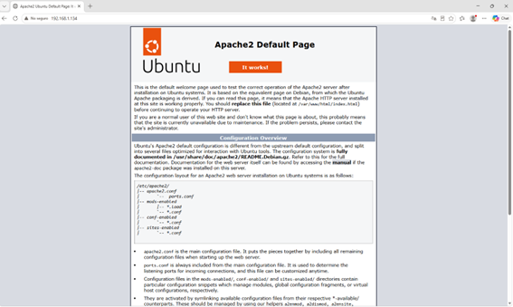
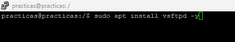

Actividad 5 – Configuración de servicios
Índice
- Configuración del servidor WEB
- Instalación del servicio FTP
Configuración del servidor WEB
Comprobamos el estado de apache2.
Captura: Estado de Apache2

Entramos al archivo .html con el siguiente comando:
Captura: Terminal accediendo a /var/www/html

Deberíamos ver algo similar a lo siguiente:
Captura: Contenido del archivo index.html

En un buscador ponemos la IP del servidor y nos conectamos al servidor Apache.
Captura: Página por defecto de Apache2

Instalación del servicio FTP
Instalamos el servicio FTP con el siguiente comando:
sudo apt install vsftpd -y
Esperamos a que se instale
Captura: Instalación de vsftpd

Ahora verificamos el estado:
sudo systemctl status vsftpd
Captura: Estado del servicio vsftpd

Creamos un nuevo usuario para el FTP.
Captura: Creación del usuario FTP

Creamos una carpeta de FTP y le asignamos los permisos:
sudo mkdir /home/practica/ftp
sudo chmod a-w /home/practica/ftp
sudo chown nobody:nogroup /home/practica/ftp
En el explorador de archivos ponemos la IP de nuestro servidor y nos aparecerá la siguiente ventana:
Captura: Inicio de sesión FTP desde Windows

Y una vez iniciada la sesión en el servidor FTP, nos aparecerá la carpeta que hemos creado correctamente.
Captura: Carpeta FTP accesible